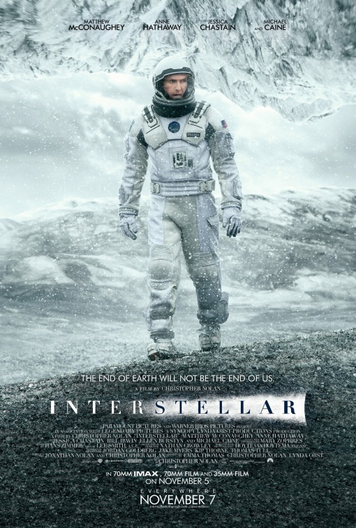

What is the best film of all time?
Interstellar (2014)

About the Film
- Directed by Christopher Nolan and casting well known stars like Matthew McConaughey, Anne Hathaway, and Michael Caine, Interstellar (2014) first released in theatres on November 7, 2014.
- While it is only Nolan’s 5th best grossing film earning $701 million worldwide, it comes behind huge names like The Dark Knight (2008), Oppenheimer (2023), and Inception (2010), and that shows how great Interstellar is holding up to huge names like these.
- Interstellar (2014) is a science fiction film set in a world where the earth is struggling from climate change which is also causing food shortages. An ex NASA pilot played by Matthew McConaughey is brought back to lead a mission through a mysterious wormhole which could lead to a new home like Earth, but at what cost?
Interesting Facts About the Film
- In one scene of the film, the scientists are trying to visit a planet where each hour there would take up 7 years back on earth, and this was actually based on Einstein’s theory of relativity which shows how strong gravity slows down time.
- For many of the scenes filmed on different planets, Nolan decided to shoot at real locations instead of using CGI, which took the cast and crew to some really breathtaking places like Iceland, which made the film that much more realistic.
- Nobel Prize winner Kip Thorne was an executive producer of the film, which ensured that the depictions of wormholes, black holes, and relativity were scientifically accurate.
Why it Should be Considered the Best
- To list a few of the awards, it won a 2015 Critics Choice Award for best sci-fi / horror, 2015 Critics Choice MVP Award, 2015 Academy Award for Best Visual Effects, 2015 Empire Award for Best Film and Best Director, and a BAFTA Award for Best Special Visual Effects.
- Interstellar (2014) is most known for its scientific realism, with Nolan constantly consulting and referring to theoretical physicist Kip Thorne. This makes the film even more special because the viewer knows it’s closely based on our reality.
- Another thing that makes this film special is the emotional ride it takes the viewer on throughout the film, because it has scenes where you’ll laugh, it has scenes where you’ll cry, and it has scenes where you’ll be on the edge of your seat.